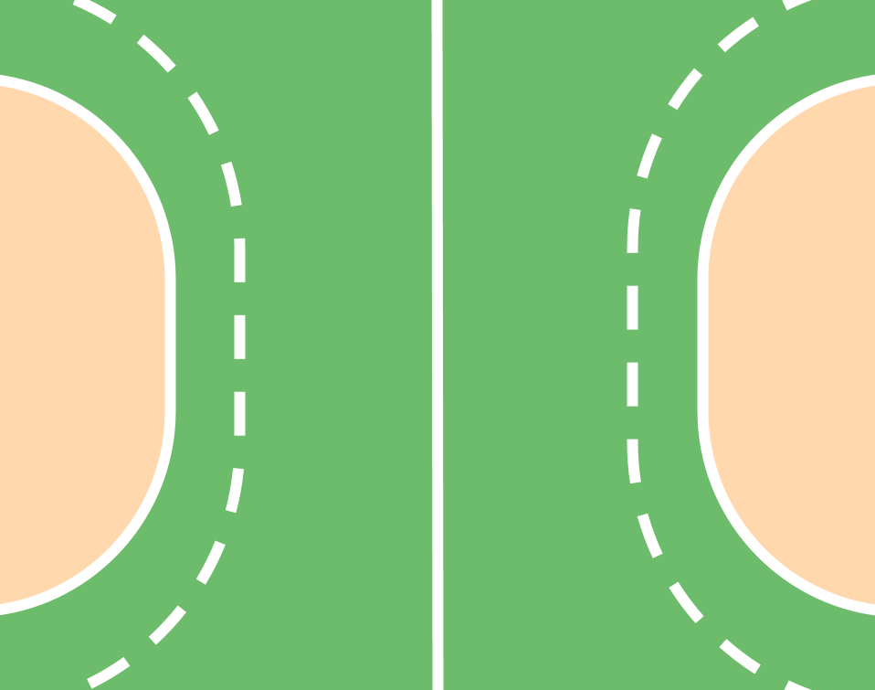
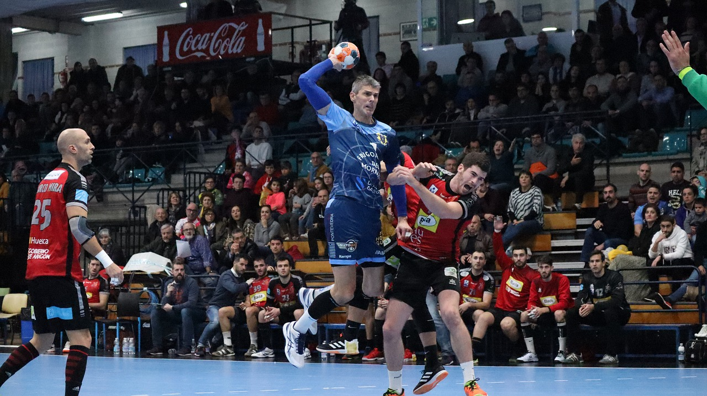
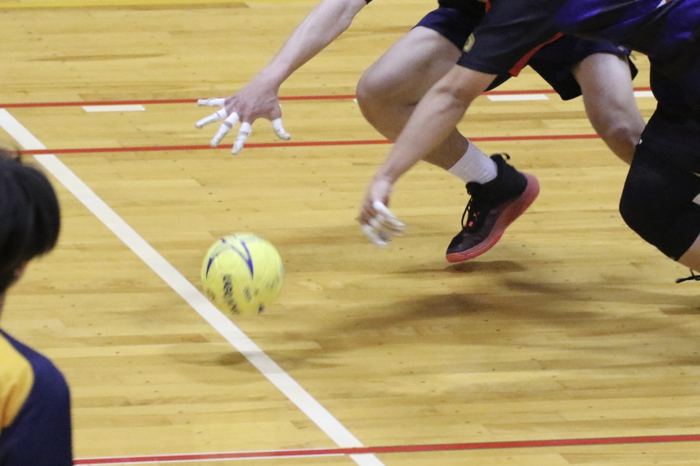

項目２

コートの大きさ
20m×40mで、バスケットボールのコートの大きさに近いです。また、ゴールの前には6mラインという半円のような線が引かれており、ゴールキーパー以外はこれよりゴールに近づくことはできません。

時間
試合時間は30分を前半後半実施し、合計60分です。点数はおおよそ20点～40点くらい入るスポーツで、試合中目まぐるしく攻守が変わるので目が離せません。

選手
試合中の選手交代の回数に制限はありません。選手は最大16名まで登録することができるので、選手を流動的に変えながら常にスピード感のある試合が展開されます。

ボールの扱い
男子は3号球、女子は2号球でバレーボールより一回り小さく、ギリギリ片手で掴めるかどうかくらいの大きさです。基本的に手で扱い、ドリブルなどのルールはバスケットボールに近いです。